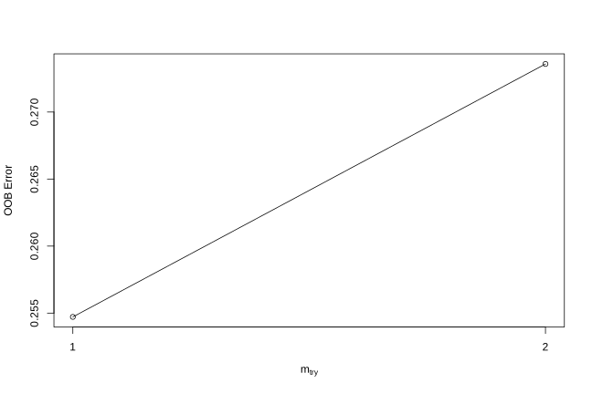
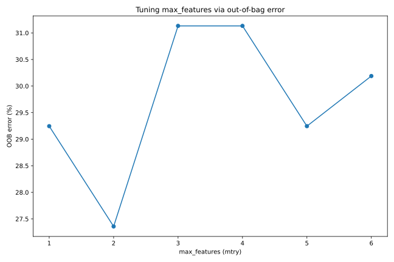
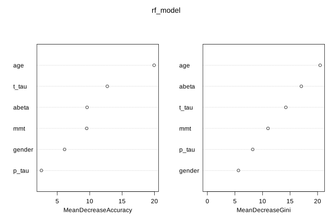
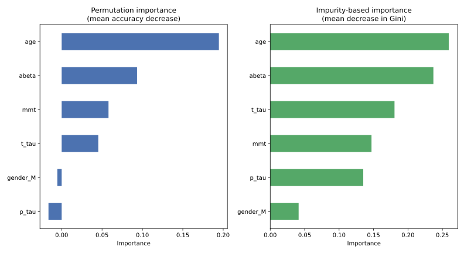

install.packages("randomForest")
install.packages("caret")2 How to use random forest
There are many packages for fitting random forests. In R, we have been using the randomForest package, which does a decent job and is fast enough for most applications; ranger is a faster alternative worth checking out. In Python, the standard choice is RandomForestClassifier (or RandomForestRegressor for regression) from scikit-learn.
In this chapter we go through a full modelling workflow in both languages, side by side, using the same Alzheimer’s/FTD/MCI dataset as before. The R and Python examples answer the same questions and use the same random forest algorithm underneath, but R and Python use different random-number generators, so the exact numbers differ a little between the two tracks. That is expected and does not change the interpretation.
The Python examples use pandas for data handling, scikit-learn for modelling, and matplotlib for plotting:
python -m pip install pandas scikit-learn matplotlibThe results below were produced with R 4.5.3, randomForest 4.7.1.2 and caret 7.0.1, and with Python 3.13.13, scikit-learn 1.9.1, pandas 3.0.6, numpy 2.5.3 and matplotlib 3.11.2. Later package versions may give slightly different numbers.
2.1 Data
We use the same clinical dataset described in the Prerequisites chapter: 206 samples with age, gender and four CSF measurements (mmt, abeta, t_tau, p_tau), labelled with a diagnostic group. Download the file here: data.csv, and place it in a data folder next to your script or notebook.
We first read the file and recode the non-demented controls label to control:
data <- read.csv("data/data.csv", sep = ";", stringsAsFactors = FALSE, check.names = FALSE,
colClasses = c("numeric","character","numeric","numeric","numeric","numeric","numeric","character"))
data <- data[, -1]
data$group[data$group == "non-demented controls"] <- "control"
head(data) gender age mmt abeta t_tau p_tau group
1 M 75 12 370 240 44 AD
2 F 76 29 390 680 118 AD
3 F 75 26 230 520 106 AD
4 F 82 26 230 530 84 AD
5 F 88 25 460 960 129 AD
6 F 72 25 350 840 118 ADimport pandas as pd
data = pd.read_csv("data/data.csv", sep=";")
data = data.drop(columns=data.columns[0])
data["group"] = data["group"].replace("non-demented controls", "control")
data.head() gender age mmt abeta t_tau p_tau group
0 M 75 12 370 240 44 AD
1 F 76 29 390 680 118 AD
2 F 75 26 230 520 106 AD
3 F 82 26 230 530 84 AD
4 F 88 25 460 960 129 AD
5 F 72 25 350 840 118 ADOur data has to be in a data frame where features are in the columns and samples are in the rows. In R, categorical variables should preferably be factor and you can keep the response variable as a column in the same data frame, using the formula interface (group ~ .) to fit the model. In Python, scikit-learn instead expects a numeric feature matrix X and a separate target vector y; categorical predictors such as gender first need to be converted into numeric dummy columns, for example with pandas.get_dummies.
set.seed(20)
testing_index <- sample(1:length(data$p_tau), 100, replace = FALSE)
limited_data4_training <- data[-testing_index, ]
limited_data4_testing <- data[testing_index, ]
limited_data4_training$group <- as.factor(limited_data4_training$group)
limited_data4_training$gender <- as.factor(limited_data4_training$gender)
limited_data4_testing$group <- as.factor(limited_data4_testing$group)
limited_data4_testing$gender <- as.factor(limited_data4_testing$gender)
head(limited_data4_training) gender age mmt abeta t_tau p_tau group
1 M 75 12 370 240 44 AD
4 F 82 26 230 530 84 AD
7 M 70 25 270 230 34 AD
9 F 68 27 160 810 100 AD
11 M 77 23 430 780 119 AD
12 F 80 26 350 1150 159 ADfrom sklearn.model_selection import train_test_split
X = pd.get_dummies(data.drop(columns=["group"]), columns=["gender"], drop_first=True)
y = data["group"].astype("category")
X_train, X_test, y_train, y_test = train_test_split(
X, y, test_size=100, random_state=20
)
pd.concat([X_train, y_train], axis=1).head() age mmt abeta t_tau p_tau gender_M group
2 75 26 230.0 520.0 106.0 False AD
69 80 22 349.0 1250.0 110.0 True AD
74 68 24 321.0 303.0 46.0 True AD
50 79 30 466.0 546.0 66.0 True AD
117 63 26 650.0 130.0 24.0 False MCI/non-ADConverter2.2 Fitting a random forest model
You can set various parameters in randomForest/RandomForestClassifier, but probably the most relevant ones are mtry/max_features, ntree/n_estimators and importance. We have already covered what these parameters do. Printing the fitted R model shows the out-of-bag (OOB) error rate and confusion matrix directly. scikit-learn does not print this automatically, but the same information is available from oob_decision_function_ when oob_score=True is set, so we build an equivalent summary ourselves.
rf_model <- randomForest::randomForest(group ~ ., data = limited_data4_training,
ntree = 100, importance = TRUE)
print(rf_model)
Call:
randomForest(formula = group ~ ., data = limited_data4_training, ntree = 100, importance = T)
Type of random forest: classification
Number of trees: 100
No. of variables tried at each split: 2
OOB estimate of error rate: 28.3%
Confusion matrix:
AD control FTD MCI/ADConverter MCI/non-ADConverter
AD 36 2 0 0 2
control 4 23 0 0 1
FTD 1 0 0 0 4
MCI/ADConverter 9 1 0 0 1
MCI/non-ADConverter 3 2 0 0 17
class.error
AD 0.1000000
control 0.1785714
FTD 1.0000000
MCI/ADConverter 1.0000000
MCI/non-ADConverter 0.2272727import numpy as np
from sklearn.ensemble import RandomForestClassifier
from sklearn.metrics import confusion_matrix
rf_model = RandomForestClassifier(n_estimators=100, oob_score=True, random_state=20)
rf_model.fit(X_train, y_train)
# out-of-bag predictions: the Python equivalent of R's print(rf_model)
oob_pred = rf_model.classes_[np.argmax(rf_model.oob_decision_function_, axis=1)]
oob_error = (oob_pred != y_train.to_numpy()).mean()
print(f"Number of trees: {rf_model.n_estimators}")
print(f"max_features (mtry): {rf_model.max_features}")
print(f"OOB estimate of error rate: {oob_error:.1%}")
oob_cm = pd.DataFrame(confusion_matrix(y_train, oob_pred, labels=rf_model.classes_),
index=rf_model.classes_, columns=rf_model.classes_)
oob_cm["class.error"] = 1 - np.diag(oob_cm) / oob_cm.sum(axis=1)
print(oob_cm)Number of trees: 100
max_features (mtry): sqrt
OOB estimate of error rate: 28.3%
AD FTD MCI/ADConverter MCI/non-ADConverter control class.error
AD 35 2 2 1 3 0.186047
FTD 1 0 0 3 0 1.000000
MCI/ADConverter 6 1 3 1 0 0.727273
MCI/non-ADConverter 3 1 0 20 0 0.166667
control 4 0 1 1 18 0.2500002.3 Predicting new data
For doing prediction, we use predict. In R, predict() takes object, newdata and type, where type is one of response, prob. or votes, giving predicted values, class probabilities or vote counts respectively. scikit-learn splits this into separate methods: predict() for class labels and predict_proba() for class probabilities.
predicted_class <- predict(rf_model, limited_data4_testing, type = "response")
head(predicted_class) 166 191 107 120
control control control MCI/non-ADConverter
130 98
MCI/non-ADConverter AD
Levels: AD control FTD MCI/ADConverter MCI/non-ADConverterpredicted_class = rf_model.predict(X_test)
pd.Series(predicted_class, index=X_test.index).head()5 AD
44 MCI/ADConverter
147 control
130 MCI/non-ADConverter
181 control2.4 Evaluating performance
We can use the confusionMatrix function from the caret package to calculate accuracy measures: caret::confusionMatrix(predicted_class, true_class). scikit-learn has confusion_matrix and classification_report, but they do not report exactly the same statistics as caret, so here we write a small helper that reproduces caret’s per-class sensitivity, specificity, predictive values and balanced accuracy from a scikit-learn confusion matrix.
caret::confusionMatrix(predicted_class, limited_data4_testing$group)Confusion Matrix and Statistics
Reference
Prediction AD control FTD MCI/ADConverter MCI/non-ADConverter
AD 30 1 0 9 3
control 0 16 0 0 6
FTD 0 0 3 0 0
MCI/ADConverter 2 0 0 0 0
MCI/non-ADConverter 4 0 3 1 22
Overall Statistics
Accuracy : 0.71
95% CI : (0.6107, 0.7964)
No Information Rate : 0.36
P-Value [Acc > NIR] : 1.203e-12
Kappa : 0.5921
Mcnemar's Test P-Value : NA
Statistics by Class:
Class: AD Class: control Class: FTD Class: MCI/ADConverter
Sensitivity 0.8333 0.9412 0.5000 0.0000
Specificity 0.7969 0.9277 1.0000 0.9778
Pos Pred Value 0.6977 0.7273 1.0000 0.0000
Neg Pred Value 0.8947 0.9872 0.9691 0.8980
Prevalence 0.3600 0.1700 0.0600 0.1000
Detection Rate 0.3000 0.1600 0.0300 0.0000
Detection Prevalence 0.4300 0.2200 0.0300 0.0200
Balanced Accuracy 0.8151 0.9344 0.7500 0.4889
Class: MCI/non-ADConverter
Sensitivity 0.7097
Specificity 0.8841
Pos Pred Value 0.7333
Neg Pred Value 0.8714
Prevalence 0.3100
Detection Rate 0.2200
Detection Prevalence 0.3000
Balanced Accuracy 0.7969def confusion_stats(y_true, y_pred, labels):
y_true, y_pred = np.asarray(y_true), np.asarray(y_pred)
cm = confusion_matrix(y_true, y_pred, labels=labels)
n = cm.sum()
accuracy = np.trace(cm) / n
rows = []
for i, lab in enumerate(labels):
tp = cm[i, i]
fn = cm[i, :].sum() - tp
fp = cm[:, i].sum() - tp
tn = n - tp - fn - fp
sensitivity = tp / (tp + fn)
specificity = tn / (tn + fp)
rows.append([
sensitivity, specificity,
tp / (tp + fp), # Pos Pred Value
tn / (tn + fn), # Neg Pred Value
(tp + fn) / n, # Prevalence
tp / n, # Detection Rate
(tp + fp) / n, # Detection Prevalence
np.mean([sensitivity, specificity]), # Balanced Accuracy
])
stats = pd.DataFrame(
rows, index=labels,
columns=["Sensitivity", "Specificity", "Pos Pred Value", "Neg Pred Value",
"Prevalence", "Detection Rate", "Detection Prevalence", "Balanced Accuracy"],
).T
return accuracy, stats
accuracy, stats = confusion_stats(y_test, predicted_class, rf_model.classes_)
print(f"Overall Accuracy: {accuracy:.4f}")
print(stats.round(4))Overall Accuracy: 0.7100
AD FTD MCI/ADConverter MCI/non-ADConverter control
Sensitivity 0.8485 0.0000 0.1000 0.7931 0.9048
Specificity 0.7910 0.9892 0.9667 0.8732 0.9747
Pos Pred Value 0.6667 0.0000 0.2500 0.7188 0.9048
Neg Pred Value 0.9138 0.9293 0.9062 0.9118 0.9747
Prevalence 0.3300 0.0700 0.1000 0.2900 0.2100
Detection Rate 0.2800 0.0000 0.0100 0.2300 0.1900
Detection Prevalence 0.4200 0.0100 0.0400 0.3200 0.2100
Balanced Accuracy 0.8198 0.4946 0.5333 0.8332 0.93972.5 Tuning parameters
To tune mtry, R’s randomForest provides tuneRF, which uses out-of-bag error and a left/right search starting from mtryStart. scikit-learn has no direct equivalent, so in Python we simply loop over candidate max_features values, refit the model with oob_score=True for each one, and pick the value with the lowest OOB error. This is conceptually the same idea as tuneRF, just spelled out explicitly.
par(mfrow = c(1, 1))
set.seed(5)
randomForest::tuneRF(
limited_data4_training[, setdiff(names(limited_data4_training), "group")],
limited_data4_training$group,
mtryStart = 1
)mtry = 1 OOB error = 25.47%
Searching left ...
Searching right ...
mtry = 2 OOB error = 27.36%
mtry OOBError
1.OOB 1 0.2547170
2.OOB 2 0.2735849
import matplotlib.pyplot as plt
max_features_values = list(range(1, X_train.shape[1] + 1))
oob_errors = []
for mf in max_features_values:
m = RandomForestClassifier(n_estimators=100, max_features=mf,
oob_score=True, random_state=5)
m.fit(X_train, y_train)
pred = m.classes_[np.argmax(m.oob_decision_function_, axis=1)]
oob_errors.append((pred != y_train.to_numpy()).mean())
print(f"max_features = {mf} OOB error = {oob_errors[-1]:.2%}")
best_mf = max_features_values[int(np.argmin(oob_errors))]
print(f"Best max_features (lowest OOB error): {best_mf}")
plt.plot(max_features_values, [e * 100 for e in oob_errors], marker="o")
plt.xlabel("max_features (mtry)")
plt.ylabel("OOB error (%)")
plt.savefig("images/rf-tunerf-py.svg")max_features = 1 OOB error = 29.25%
max_features = 2 OOB error = 27.36%
max_features = 3 OOB error = 31.13%
max_features = 4 OOB error = 31.13%
max_features = 5 OOB error = 29.25%
max_features = 6 OOB error = 30.19%
Best max_features (lowest OOB error): 2
2.6 Variable importance
Finally, to see the variable importance, R’s importance/varImpPlot extract and plot it directly from the fitted model. scikit-learn’s RandomForestClassifier exposes impurity-based importance through feature_importances_, which corresponds to R’s MeanDecreaseGini. The permutation-based measure (MeanDecreaseAccuracy in R) is not built into the classifier itself; it is computed separately with sklearn.inspection.permutation_importance, which we run on the held-out test set here.
randomForest::importance(rf_model)
randomForest::varImpPlot(rf_model) AD control FTD MCI/ADConverter MCI/non-ADConverter
gender 0.2606584 4.118921 5.8516194 -0.2829469 2.632055
age 5.4417838 21.579161 1.5053292 3.7648161 7.118233
mmt 5.7195419 7.764001 -0.2705999 1.0383546 3.816802
abeta 5.6091130 3.494602 -1.3176872 -0.3068971 9.856776
t_tau 7.2440944 2.719246 -2.2393747 -0.2076253 13.324209
p_tau 0.4144791 1.788861 0.7930516 0.1244211 3.053540
MeanDecreaseAccuracy MeanDecreaseGini
gender 6.125677 5.636911
age 19.944318 20.457114
mmt 9.541772 11.006211
abeta 9.598139 17.047667
t_tau 12.718459 14.234984
p_tau 2.548707 8.229038
from sklearn.inspection import permutation_importance
rf_final = RandomForestClassifier(n_estimators=100, max_features=best_mf,
oob_score=True, random_state=20)
rf_final.fit(X_train, y_train)
impurity_importance = pd.Series(rf_final.feature_importances_, index=X_train.columns)
perm = permutation_importance(rf_final, X_test, y_test, n_repeats=30, random_state=20)
perm_importance = pd.Series(perm.importances_mean, index=X_train.columns)
print("Impurity-based importance:")
print(impurity_importance.sort_values(ascending=False))
print("\nPermutation importance (mean accuracy decrease, test set):")
print(perm_importance.sort_values(ascending=False))Impurity-based importance:
age 0.259227
abeta 0.236928
t_tau 0.180464
mmt 0.147055
p_tau 0.135077
gender_M 0.041248
Permutation importance (mean accuracy decrease, test set):
age 0.194667
abeta 0.093333
mmt 0.058000
t_tau 0.045333
gender_M -0.005333
p_tau -0.016333
Both the R and the Python run agree that age, abeta and t_tau are the most influential predictors, which matches what we already saw earlier in this book. The ranking between the permutation-based measure and the impurity-based measure is not identical in either language, a reminder that these two importance measures answer slightly different questions and can disagree, especially for less important variables.
3 Summary
Random forests are extremely powerful algorithms that can be used both for prediction and feature selection. They don’t require much data pre-treatment, they are generally robust with respect to scales of the data. They can handle missing values and can be used both for classification and regression. However, trees, in general, can result in very different models if the training data change. So to get a good estimate of feature importance and prediction accuracy it is highly recommended to cross-validate the trees. Despite some arguing that random forests do produce ‘good’ predictions, there are variants that are very powerful and in fact, they were winning many machine learning competitions in many different fields. If you are interested you can look at gradient boosting for decision trees. Like any other modelling technique, random forests are just another algorithm, as a researcher, it is our job to make sure that we use them in a right way. Please always do validation of the model before publishing your results!